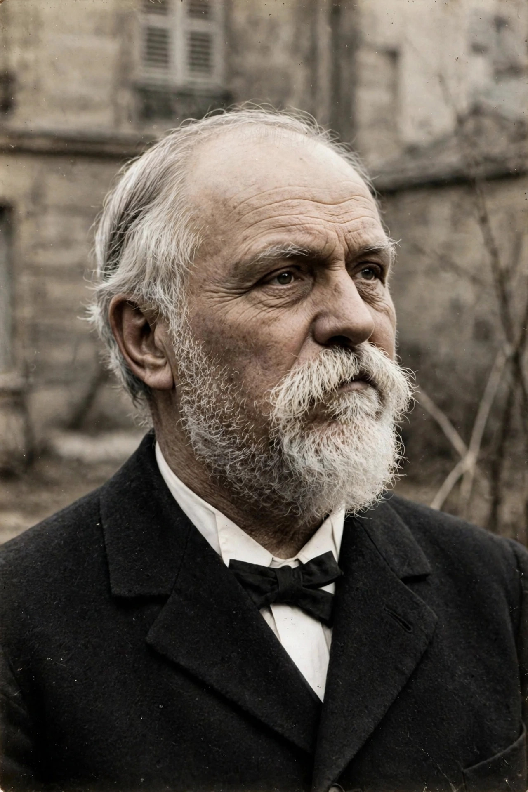

Georges Eugène Sorel (2 November 1847 – 29 August 1922) was a French philosopher, social theorist and advocate of revolutionary syndicalism. His best-known work, Reflections on Violence (1908), developed the idea of the myth of the general strike as a motivating image capable of mobilising the working class.

Sorel was trained as an engineer and worked for the French department of public works, retiring in 1892 to devote himself to writing. He engaged with Marxism while distancing himself from orthodox, deterministic interpretations, and contributed to syndicalist and later nationalist journals.
Sorel argued that social myths — vivid, mobilising images of a future struggle, such as the general strike — need not be literally true predictions to be powerful; their function is to give a movement unity and will. He defended proletarian violence as a means of separating the working class from the bourgeoisie and resisting decadence, a stance that influenced syndicalists, and was also read approvingly by some fascist thinkers, making his legacy contested.
His other works include The Decomposition of Marxism and Illusions of Progress, in which he criticised rationalist faith in progress.
Sorel influenced revolutionary syndicalism in France and Italy, thinkers including Antonio Gramsci, and debates about myth, violence and mass mobilisation in 20th-century politics.